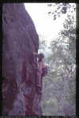

By Lee Skidmore, with some assistance from Steve Baskerville, November 1999
Last updated 24 March, 2000

| A Guide To Four Climbing Areas In The Hills Behind James Cook University |
By Lee Skidmore, with some assistance from Steve Baskerville, November 1999 Last updated 24 March, 2000 |
|
|
|
INTRODUCTION
This page is dedicated to four areas, three of which are accessed from the south end of the James Cook University ring-road. These three areas are Shepherds Crook, University Wall and a bouldering area. The fourth area is Lazy Afternoon Wall and is located 3km from the Uni.
DISCLAIMER
To climb at these areas without possible trespassing, relevant permission may be required. It's your choice whether you obtain permission or not.
INITIAL ACCESS
This does not apply to Lazy Afternoon Wall. At the top / south / furthest from the sea end of the JCU ring-road there is a dirt 4WD track leading in (toward the SW). Take this SW and then take the next obvious left turn (facing SE, or toward Mt Stuart) until you stumble across the main creek bed (obvious). It should take about 5-8 minutes of walking to get from the bitumen road to this creek. This is the starting point from which all area-specific directions will be given.
| Creek bouldering | University Wall | Shepherds Crook | Lazy Afternoon Wall |
|
Creek bouldering
To get to the decent area with good-sized boulders, walk up the creek for about 15-18 minutes. You'll pass small (3-4m high) walls on the way, and will eventually come across one large boulder on the right of the creek bed (pictured right). This signals the start of the good area. This boulder has two great problems and a project on it. Click here for another shot of Jason on Desperately Wanting. |
||
| Above: Topo lines on the main boulder. Jason Shaw bouldering Desperately Wanting |
Above: Steve Baskerville slapping on one of the slick problems upstream |
Further upstream is an assortment of slick, smaller-sized boulders that offer some very cool problems. Many are severely water-washed with no footholds and rely on contact and open grip strength.
University Wall Climbing Guide
This slabby mini-cliff was discovered by Steve Baskerville and Jason Shaw when they were too lazy to bother walking all the way up to Shepherds Crook. The wall is about 40m long and 15m at its highest, and the middle section of the wall features an overhang. In many ways, the area is quite similar to Kissing Point. For those that don't know Kissing Point, this means easy, slabby and a bit chossy. Stars are given to the better climbs and are relative.
Upon arriving at the creek bed, follow it upwards for 10-15 mins (i.e. not as far as the bouldering area) passing one major R-hand branch (at about 5 mins) until you reach the second, major R-hand branch. Follow this R-hand branch of the creekbed for 10 mins until you see a black and orange wall up to the R. Walk steeply up the 70m or so to the base (5 mins). At the far R end of the wall there is a small detached pinnacle. Here is the first climb. Most of the routes have their starts marked with an orange arrow.
Off Campus 6m 15
No pro. Starts on the front of the pinnacle, about 0.5m L of the R arête. A bouldery low section to a cruisy slab top out.
FSA Steve Baskerville 9/9/98.
Extracurricular Activity 13m (??)
Start is marked at base of arête 2m L of CA101. Up arête following cracks to below small roof. Through this to the R up the nice-looking crack to large tree growing in crack. Traverse R 2m then through 1m roof.
Status: Waiting to be led, get to it.
** The Graduation 13m 19
Very cool. Start as per the above project - at base of arête (marked). Up arête
following cracks to below small roof. Commit to crux and pull directly through roof on
RP's, then nice climbing straight up arête to perfect belay seat and tree.
Lee Skidmore, Jason Shaw, Pip Newton 14/8/98.
|
Above: Sequence of Lee onsighting the first ascent of The Graduation. Extracurricular Activity's crack can be seen on the R of the images. |
||
Thinking Cap 15m 19/20
You'll need one - a very thought-provoking crux! Starts around 5m L of PA below the double overhangs (marked). Spaced jugs up slab to below the double overhangs. Cruxy moves climbing the corner through overhangs on small-med wires and then a slabby ramble to the top and tree belay.
Lee Skidmore 14/8/98.
About 4m L, the overhang reduces in size from big to small. Steve's project climbs through this section.
Higher Learning 15m (??)
About 4m L of PA. Up slab and through blocky corner between the large roofs (on R) and tiny roofs (on L) and then runout slab.
Project: Steve Baskerville.
* Campus Freak 10m 7
Start is marked, 3m L of the above route. Climb black slab to small rooflet (gear at base of this). Nice moves through rooflet then run it out up the ledgy slab to tree belay.
Steve Baskerville, Jason Shaw 13/8/98.
School's Out 10m 1
Very much a beginner stroll. Start is marked. Climbs the black streak up slab 4m L of "CF". A tree for belay is 5m to the R.
Steve Baskerville, Jason Shaw 13/8/98.
Shepherds Crook Climbing Guide
From the bouldering area mentioned above, keep walking up the creek until it becomes difficult to do so, then move out of the creek onto the grassy plain. Then follow your nose steeply up to the orange walls. The walk up should take about 1.5 hours in total.
|
* Jumpuck 9m 19
* Ramming Cams 15m 15 |
|
|
Above: Lee on the first top rope ascent of Jumpuck |
A Room With A Vewe 9m 10
Start is marked. From L side of main cliffs walk up & back (away from sea) for 100m to reach black wall. Up crack with tree growing from base to below roof to hidden 'room'. Traverse R under roof and up to finish at tree.
Matt Russell, Lee Skidmore 4/97
* Project 17m 18/19?
From ARWAV walk L, skirting the rock walls. This climb is obvious as a steep crack start tending L into a corner then up to beneath a 1.5m roof split by a 5 inch crack. Pro goes in this, then traverse to the lip of the roof, turn the lip on hand jams (crux) and up the wide crack to finish at tree.
Project: Lee Skidmore 4/97
Status: Open project, feel free.
In early 1997, Matt Russell and Lee Skidmore walked up to the wall to check out climbing possibilities, but with no bolting gear available and the all-natural routes looking too easy, the area was put aside for later. It took until late 1998 for Lee to return to the area with a drill and cleaning gear.
|
Let's talk access. Very easy. Exiting the University via the JCU gatehouse, drive 100m to the T-junction with the "No Dumping" sign. Instead of turning R as usual (going towards Townsville), turn L (on to Angus Smith Drive). After 300m the road will become dirt. At 2.8km there will be the Water Treatment Plant on the R. The wall is now visible up the hill to the L (not that small upper wall, the lower one). At 3.2km there is a 40km/h sign and an obvious gate (firing range boundary). Park car in dirt side-road 15m back from gate on L. Follow this dirt track away from road and up towards the crag. Should take no longer than about 12 mins from car to crag. You're aiming for the largest section of wall amongst many small boulders. |
|
|
Above: Map showing the location of the crag |
A note about the bolts. They are bomber expansion bolts that have their screw nuts glued into place. Treat them as carrots, but please note that only larger 45 degree bolt plates will fit (not 90 degree ones). Experiment to find what works. Routes are listed from L to R.
|
The following four climbs are on the tallest section of wall, L of the undercut bouldering wall [see topo map].
* Binocular Pocket 11m 13 |
 |
|
Above: Lee on the first ascent of Binocular Pocket |

{kind=link}
{kind=link}
{kind=link}
{kind=link}
{kind=link}
{kind=link}
{kind=link}
{kind=link}
{kind=link}
{kind=link}
{kind=link}
{kind=link}
{kind=link}
{kind=link}
{kind=link}
{kind=link}
{kind=link}